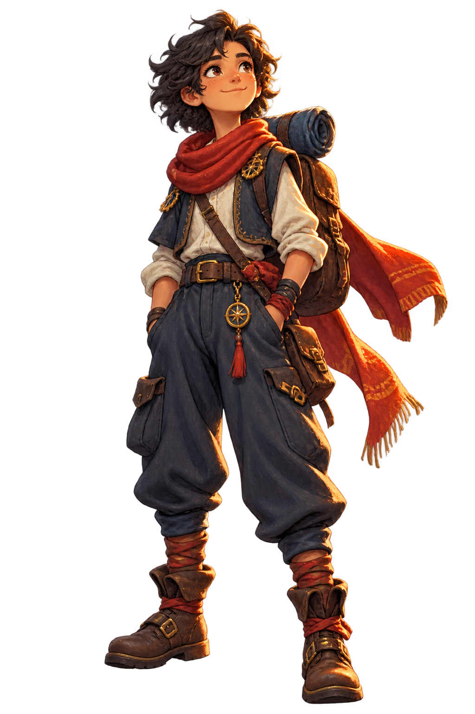

✦
FROM YOUR ARCHIVE
A thoughtful next story, when you want one.
Recommendations are grounded in the things you have already loved—not a public feed.
TUESDAY, SEPTEMBER 2
You have room for one good thing today.

QUICK CAPTURE
YOUR NEXT GOOD THING
TODAY'S STORY
YOUR PERSONAL SHELF
Every watch, read, and play — yours, not a feed.
FROM YOUR ARCHIVE
Recommendations are grounded in the things you have already loved—not a public feed.
Select standard diary.csv, watched.csv, ratings.csv, watchlist.csv, likes, or list exports together. Nothing leaves this browser.
SCHOLARSHIP TRACK
Sessions count. Wandering back counts too.
THIS WEEK
TOPICS IN MOTION
PRACTICE & MASTERY
LEARNING PATHS
A link, a textbook, or a simple list — one part at a time.
MAKE A PATH
Paste a course link or table of contents. Add parts yourself, or let a connected LLM propose an editable plan.
TODAY
Honest reflection, without turning it into homework.
REFLECTION COMPANION
Your journal stays yours. A connected LLM can offer a question or spot a pattern, but it never writes your words for you.
DIRECTION, NOT PRESSURE
Goals become a few kind, concrete tasks — never an infinite project tree.
RHYTHM & RECOVERY
Habits, grace days, and a pause button for your nervous system.
GRACE DAYS
They preserve a rhythm when life gets loud. Nothing about a lapse is a failure.
LONGEST RHYTHM
14days of showing upYOUR RITUALS
STATE SHIFT
GENTLE BREATHWORK
Four easy counts in, hold, out, and rest. A steady place to begin.
LIFE ARCHIVE
See days, memories, and long horizons without reducing a life to a score.
YOUR RECENT RHYTHM
MILESTONES
YEARLY HORIZONS
Long-term intentions live here; tasks stay small elsewhere.
YOUR PATTERNS
Numbers are mirrors, not grades.
DAILY ENERGY
WHERE TIME WENT
A SMALL PATTERN
Three study sessions this week began before 10am. Want to protect one more gentle morning block?
YOUR TROPHY SHELF
Nothing expires, nothing is taken away.
LATEST UNLOCK
Log a reading session. The beginning of a long shelf.
YOUR COMPANION
Your character is a visual reflection of progress—never a reason to push through exhaustion.
MAKE IT YOURS
Your data and choices stay under your control.
APPEARANCE
LLM COMPANION
Optional. LIFE works completely without it.
MEMORY
Let recommendations use your local rating history. The browser edition has no embeddings or vector database; desktop builds can add optional local vector retrieval.